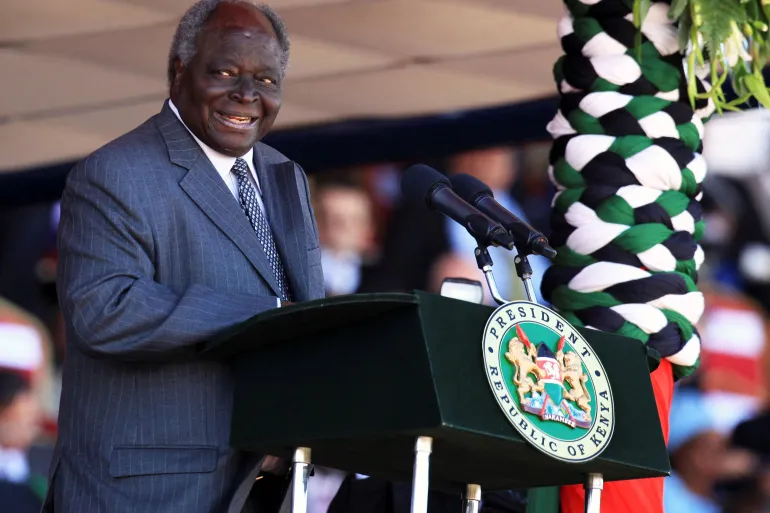

A Tribute To
Emilio Mwai Kiabki
He was the third president of kenya

His life as a president
Kibaki who served as the third president of kenya, He modernised the country where he introduced
- Free education
- Free TEVTS
- reduction of Taxation for the mortocycle
- Constructions of roads and health centers
- Improved the economic areas
- He also did many things which are unmentionable